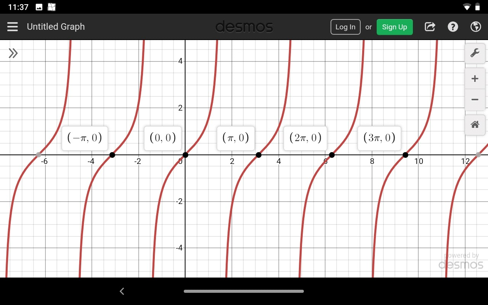

Définition: Soit \(f\) une fonction et soit \(D\)\(f\) son ensemble de définition.
On dit que \(f\) est périodique si, et seulement si, il existe un réel non nul \(t\) tel que, pour tout \(x\) de \(D\)\(f\), \(x+t\) et \(x-t\) sont éléments de \(D\)\(f\); et \(f(x+t) = f(x)\). On dit alors que \(t\) est une période de \(f\).
Si l’ensemble des périodes strictement positives de \(f\) admet un plus petit élément \(T\), on dit que \(T\) est la période de \(f\). Les autres périodes de \(f\) sont des multiples de \(T\) (pour toute période \(t\), il existe un entier relatif \(k\), tel que \(t = kT\).
Si \(f\) est de période \(T\), sa courbe représentative est invariante par toutes les translations de vecteurs \(kTi\) (vecteur i), où \(k\) est un entier relatif.
Exemples :
Par exemple les fonctions trigonométriques sont périodique.
\(f(x) = sin(x)\)
Si \(sin(x)\) est periodique alors,
\(sin(x+T) = sin(x) , ∀x\)
\(⇒sin(x+T) − sin(x)=0\)
\(sin(a) - sin(b) = 2cos(a + b2)sin(a-b2)\)
\(⇒2cos(x+T+x2)sin(x+T-x2) = 0\)
\(⇒2cos(2x+T2)sin(T2) = 0\)
\(cos(2x+T2) ≠ 0,pour tout x \)
\(∴sin(T2) = 0 \)
\(⇒T2 =nπ , n ∊ Z \)
\(⇒T =2nπ\)
\(⇒T =2π,\) pour la valeur la moins positive de \(T\)
Donc \(sin x\) est périodique de période \(2π\)
Diagrames :
\(f(x) = cos(x) =f(x+2)\) a une période de \(2\)
\(f(x) = tan(x) =f(x+π)\) a une période de \(π\)
Periodicite [de 0:00 jusqu’à la fin]: